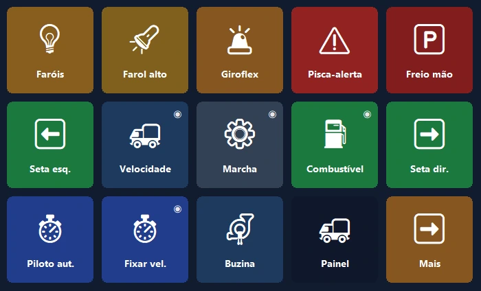
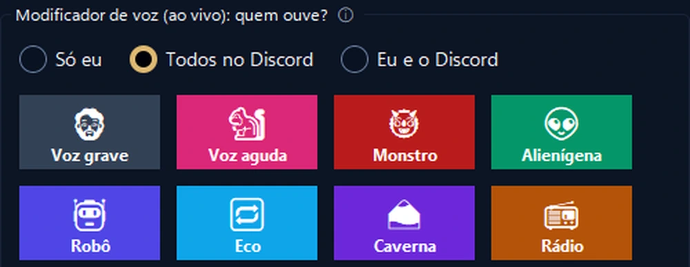

Seu celular, o painel de controle do seu PC.
Atalhos com um toque, OBS, Discord, Spotify e painéis de jogos. Por USB, Wi‑Fi ou dados móveis, com criptografia de ponta a ponta.
O painel do seu caminhão, agora no celular.
Velocidade, RPM e combustível ao vivo com luzes de alerta realistas. O celular vibra quando você passa do limite de velocidade.
- 🚦Um painel de verdadeVelocidade, limite, RPM, combustível e horário de chegada; as luzes de alerta acendem como no jogo.
- 🕹Controle com um toqueFaróis, freio de mão, piloto automático; olhe para a esquerda ou para a direita com um toque.
- 📳Sem configuraçãoQuando o jogo abre, o celular oferece um painel pronto e muda para ele toda vez que você joga.

Comande sua live com uma mão.
Seu celular no lugar de um aparelho caro: OBS, efeitos sonoros, Discord e música em uma só tela.
- 🎬Controle do OBSCenas, gravação e transmissão, com os tempos no próprio botão.
- 📳Alertas de saúde da liveO celular vibra quando há congestionamento ou quadros perdidos.
- 🎙Modificador de voz ao vivoEfeitos e painel de sons que seus amigos ouvem no Discord; silencie o microfone com um toque.

A tela mais útil da sua mesa.
Comece em um minuto com um layout pronto; os logos reais dos seus programas entram sozinhos.
Segunda tela
Veja a tela do PC no celular e use-a como mouse e teclado touch.
Volume por app
Ajuste o volume de cada programa separadamente; fone ↔ alto-falante com um toque.
Páginas inteligentes
As páginas seguem o programa em primeiro plano; timers, pastas e ações com várias etapas.
Conecta de qualquer lugar
Não precisa do mesmo Wi‑Fi: também funciona com dados móveis e com vários PCs.
Backup criptografado na nuvem
Seu layout tem backup criptografado, sem conta, e volta em um PC novo.
Privacidade
Sem conta, sem anúncios, sem rastreamento. Seus botões ficam nos seus dispositivos.
Pronto em um minuto.
Instale o programa
Baixe o PanelDeck grátis para Windows e abra.
Leia o código QR
O app do celular pareia em segundos com o código QR.
Toque
Escolha um layout pronto ou crie seus próprios botões.
Pague uma vez, seu para sempre.
Sem assinatura, sem anúncios, sem rastreamento. Todas as atualizações incluídas.
Grátis
- Conexão por USB, Wi‑Fi e dados móveis
- 6 botões na primeira página
- Atalhos, mídia, abrir programas, Discord, timer
PanelDeck Pro
- 6 abas, pastas e botões ilimitados
- Segunda tela, controles de volume, informações ao vivo
- Painel do caminhão, alertas com vibração, perfis de jogos
- Backup criptografado na nuvem
Bom saber
Preciso criar uma conta?
Não. O PanelDeck não pede conta; seus botões ficam nos seus dispositivos.
Funciona longe de casa?
Sim. Sem o mesmo Wi‑Fi, o celular se conecta por dados móveis, com criptografia de ponta a ponta.
Com quais jogos funciona?
Euro Truck Simulator 2 e American Truck Simulator têm suporte completo. Painéis ao vivo para simuladores de corrida e de voo estão em beta.
Tem versão para iPhone?
Por enquanto, Android. A versão para iPhone e iPad está no roteiro.
E se o Windows disser que “protegeu o computador”?
Clique em “Mais informações” → “Executar assim mesmo”. Detalhes no guia de instalação.